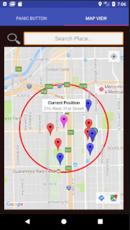
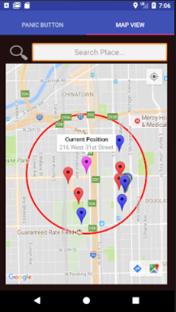
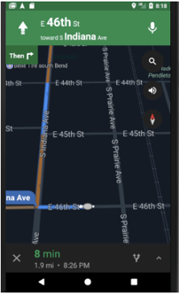
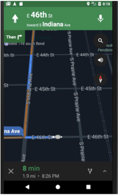

IITSecurity is an Android mobile application I helped build with my two team mates Jose Casarrubios and Yael Torres in a mobile application development course. It aims to improve security on campus by allowing students to call Public Safety at the push of a button, as well as view a map of previous incidents on a map to identify and avoid danger zones. This app can be used by the Public Safety as well, allowing them to view and respond to recent incidents, with the app providing them with the quickest route to a student in trouble.

 

The first three images are screenshots of the user interface for the student side of the application.
The first image shows a large panic button, which appears as soon as a student opens the app, allowing them to quickly tap on the button when in an emergency, which calls public safety. The victim's precise location is also sent to public safety, in case a student is unable to communicate during an emergency.
Since accidental tapping of the button can occur, we have implemented a timer that waits five seconds before calling public safety, allowing students to cancel the call if needed, as shown in the second image.
The third image displays another functionality for the student side of the application that allows users to view a map of where previous incidents have occurred. This could be used to help a student plan a journey ahead of time, allowing them to avoid areas with higher crime potential. The pins on the map are color-coded, indicating the type of incident that occurred (robbery, assault, sexual assault, etc.).
 


These next three images are screenshots of the user interface for the public safety side of the application.
The first image shows the user the recent events that have occurred. These are events that have very recently occurring or are currently taking place. If an event was recently attended to with details of the crime known, public safety can input data about the incident by tapping the info circle on the right side of the event, which will shift the event from the recent events list to the documented events list. If it is an event that is taking place, public safety can quickly respond by tapping on the event, which brings them to the second image.
The second screenshot shows up when the user has tapped on an event. They are then given the quickest route on Google Maps to the victim's location.
The third image shows the documented events list, which are a list of events that have occurred in the past. These are the events that appear on the map in the student side of the application.
This is a working application and not just a designed interface. The only functionality it currently lacks from being a usable app is the ability to call the authorities when the panic button is pressed
MiesList was a prototype I worked on with four other students in a course. We designed a concept and interface for an application that allows students in a campus to trade items with each other within that respective campus. This would be a service similar to Amazon, Craigslist, and Facebook Marketplace, except that it would be more convenient, safe, and affordable.


The three images above are some of the many screenshots of the user interface in our prototype of the application.
The first image displays the user interface of the main screen that shows up when a user opens the app. It displays featured items which are determined by an item's popularity, or it can display items that is on a student's course booklist, since we provide users the option to submit their list of courses and the application works in the background to determine the books needed for the courses provided. The main screen also contains a button that allows a student to quickly list and item for sale.
The second image shows the payment methods involved when buying an item. A student can choose to pay for an item by card or by electronic payment methods such as PayPal and Venmo. The buyer can also decide if they want the item delivered or if they want to schedule a meeting with the seller to collect the item. This is convenient since students are trading within campus.
The final image is a screenshot of the order tracking page that provides the buyer with the status of their order and a tracking number.
For more details about the idea of the application, click here to watch a video.
Carpet-Inn is an Android mobile application that I developed and published for a local home decoration company.